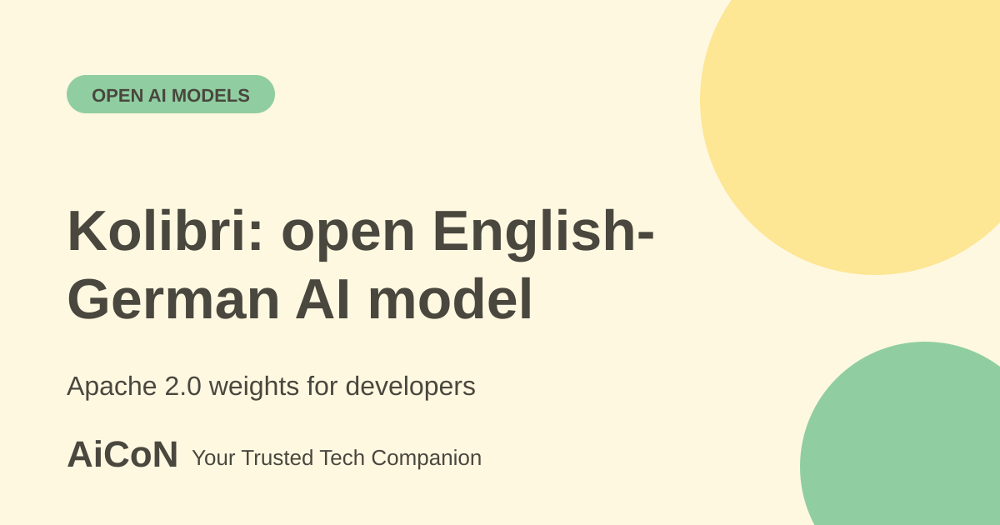

Aleph Alpha Kolibri: open English-German AI model
Kolibri is a new language model from Germany's Aleph Alpha. Its full weights are public under the Apache 2.0 licence. It handles English and German only and needs serious GPU hardware, so it is for developers and organisations, not everyday chat.

What is Kolibri?
Kolibri is a large language model from Aleph Alpha, a company based in Heidelberg, Germany. Aleph Alpha says it was available from 3 October 2026 and describes it as a specialised model for public administration and industry. It uses a mixture-of-experts design: about 78 billion parameters in total, with around 3.46 billion active for each token it processes. That design is meant to keep running costs lower than a dense model of the same total size.
Key facts
| Licence | Apache 2.0. Weights are published on Hugging Face. |
|---|---|
| Languages | English and German. Indian languages, including Malayalam, are not listed. |
| Context length | Up to 1,048,576 tokens (1 million). The model card recommends 262,144 tokens for efficient running. |
| Hardware | About 78 GB of memory for FP8 weights. Minimum listed: 2x A100 80 GB, 2x H100 SXM5, 1x H200, 1x B200 or 1x B300. |
| Knowledge cutoff | 18 June 2026 for English and German, per the model page. |
| Cost | The weights are free to download. The GPUs to run them are not. We give no rupee figure because no price is published, and your cloud or hardware cost will vary. |
What is it good at, according to Aleph Alpha?
The company lists multi-step reasoning, retrieval-augmented generation (answering from documents you supply), agent-style tool calling and an English-German assistant. It says the model is trained to say so when supplied documents do not contain enough evidence. It also has a reasoning control that lets you trade answer depth for speed.
Aleph Alpha says Kolibri matches models with several times its active size on some math, coding and long-context tests. These are the company's own benchmark tables. Even there, the results are mixed. On one agent test (Tau2-Bench Telecom), the page shows Qwen3.6 35B-A3B scoring higher than Kolibri. Treat the numbers as a starting point and test on your own data.
Who is it for?
Kolibri suits teams that want a model they can run on their own servers, for example for sensitive documents, and that work in English or German. It is not a chat app. There is no sign-up page that gives ordinary readers a free chatbot.
For most readers in Kerala, the practical meaning is smaller. It shows the growing choice of open models that organisations can host themselves. If you need Malayalam, Hindi or Tamil support, look at models that list those languages, such as the tools in our BHASHINI guide.
How a developer can try it, step by step
- Open the Kolibri page on aleph-alpha.com and read the model summary and hardware section.
- Open the model files on Hugging Face (Aleph-Alpha/Kolibri-1). Read the model card and the licence text.
- Check your hardware against the minimum list. If you do not own suitable GPUs, price a cloud GPU rental first.
- Download the weights and follow the setup instructions in the model card. Do not run unknown scripts from third-party pages.
- Test it on a small set of your own English or German tasks. Measure answer quality, speed and cost before you plan anything bigger.
Risks and caveats
- Not a chat app for everyday users.
- English and German only, per the listed languages.
- Downloading only from the official Hugging Face page avoids fake copies.
What changed since the short post?
The current model card confirms the 3 October release, English and German languages, and Apache 2.0 weights. Public weights do not make the required GPU hardware free.
Frequently asked questions
Can I chat with Kolibri online for free?
We did not find a public chat app on the pages checked. The model is released as downloadable weights.
Can I use it commercially?
Aleph Alpha releases it under Apache 2.0. Read the licence and model card for exact terms before you use it in a product.
Does it support Malayalam?
No. The model page lists German and English.
Why does it say 78B and 3B?
78B is the total number of parameters. Only about 3B of them are used for each token because of the mixture-of-experts design.
Sources: Aleph Alpha: Kolibri, Aleph Alpha press release, 5 October 2026, Aleph Alpha blog: Kolibri has landed, Hugging Face model files. Checked 6 October 2026.